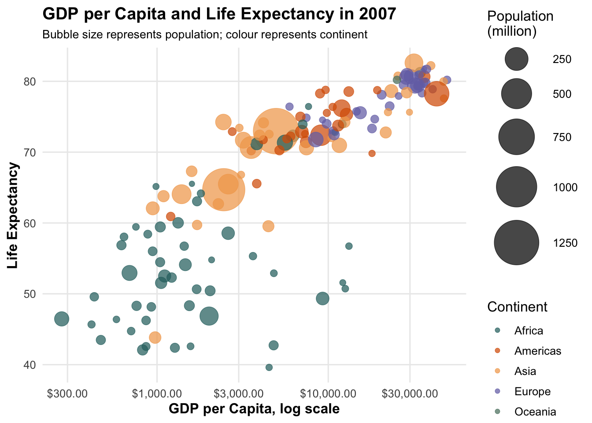

pacman::p_load(
tidyverse,
gapminder,
plotly,
scales
)
continent_palette <- c(
"Africa" = "#2A6F6F",
"Americas" = "#D95F02",
"Asia" = "#F2A65A",
"Europe" = "#7570B3",
"Oceania" = "#5B7F6E"
)
vaa_chart_theme <- theme_minimal(base_size = 12) +
theme(
plot.title = element_text(face = "bold"),
plot.subtitle = element_text(size = 10),
axis.title = element_text(face = "bold"),
panel.grid.minor = element_blank()
)Hands-on Exercise 4: Programming Animated Statistical Graphics with R
1 Overview
Static charts are good at showing one frozen moment. Animated statistical graphics are useful when the data has a time dimension and the story depends on movement, change, or progression.
In this exercise, I use R to create animated visualisations. The focus is not to make the chart move for entertainment. Animation should help the reader understand how patterns change over time. If the movement does not add meaning, then it is just a chart doing cardio for no reason.
The dataset used in this exercise contains country-level population, GDP per capita, life expectancy and regional information over time. This makes it suitable for animated bubble charts and animated trend charts.
The guiding question for this exercise is:
Can animation reveal a pattern that would be harder to see in a static chart?
2 Getting Started
Before creating the animated charts, I load the packages needed for data wrangling, plotting and animation. In this version, I use plotly for animation because it works well in HTML websites and is more stable for Vercel deployment.
3 Animation Concepts
Animated statistical graphics are built from a sequence of frames. The chart does not literally move; instead, each frame shows the data at a different point in time, and the frames are played quickly enough to create the impression of movement.
In this exercise, the time variable controls the animation. For country-level data, this usually means that each year becomes one frame. The reader can then observe how countries move, grow or change over time.
The important design question is whether the movement explains something. If the animation only makes the chart more exciting, it is weak visualisation. If the animation helps the reader follow development, ranking or trend changes, then it has analytical value.
4 Importing Data
For this exercise, I use the gapminder dataset. It contains country-level data across different years, including life expectancy, GDP per capita, population size and continent.
This structure is suitable for animated statistical graphics because each country can be tracked across time.
data("gapminder")
gapminder_data <- gapminderglimpse(gapminder_data)Rows: 1,704
Columns: 6
$ country <fct> "Afghanistan", "Afghanistan", "Afghanistan", "Afghanistan", …
$ continent <fct> Asia, Asia, Asia, Asia, Asia, Asia, Asia, Asia, Asia, Asia, …
$ year <int> 1952, 1957, 1962, 1967, 1972, 1977, 1982, 1987, 1992, 1997, …
$ lifeExp <dbl> 28.801, 30.332, 31.997, 34.020, 36.088, 38.438, 39.854, 40.8…
$ pop <int> 8425333, 9240934, 10267083, 11537966, 13079460, 14880372, 12…
$ gdpPercap <dbl> 779.4453, 820.8530, 853.1007, 836.1971, 739.9811, 786.1134, …5 Data Preparation
Before drawing the charts, I prepare a cleaner version of the dataset. Population is converted into millions so that the values are easier to read.
I also create tooltip text for the animated charts. This allows the reader to hover over each point or bar and inspect the country-level details without overcrowding the visualisation.
gapminder_clean <- gapminder_data %>%
mutate(
population_million = pop / 1000000,
tooltip = paste0(
"Country: ", country,
"<br>Continent: ", continent,
"<br>Year: ", year,
"<br>Life expectancy: ", round(lifeExp, 1),
"<br>GDP per capita: ", dollar(round(gdpPercap, 0)),
"<br>Population: ", round(population_million, 1), " million"
)
)gapminder_clean %>%
select(country, continent, year, lifeExp, gdpPercap, population_million) %>%
head()# A tibble: 6 × 6
country continent year lifeExp gdpPercap population_million
<fct> <fct> <int> <dbl> <dbl> <dbl>
1 Afghanistan Asia 1952 28.8 779. 8.43
2 Afghanistan Asia 1957 30.3 821. 9.24
3 Afghanistan Asia 1962 32.0 853. 10.3
4 Afghanistan Asia 1967 34.0 836. 11.5
5 Afghanistan Asia 1972 36.1 740. 13.1
6 Afghanistan Asia 1977 38.4 786. 14.9 6 gganimate Method: Transition Over Time
The tutorial introduces gganimate as an extension of ggplot2. The key idea is simple: start with a normal ggplot chart, then add an animation layer that tells R how the chart should change across frames.
The most relevant function is transition_time(). It uses a time variable to split the data into different animation frames. In this dataset, the time variable is year, so each year can become one frame of the animation.
Another useful function is ease_aes(). It controls how visual elements move between frames. For example, ease_aes("linear") means the movement speed stays constant. Without this, the animation may feel less controlled.
In practice, GIF-based animation can be less stable when rendering to a website environment. For this reason, I show the gganimate logic below as a conceptual demonstration, but I use plotly for the final web-based animations.
ggplot(
gapminder_clean,
aes(
x = gdpPercap,
y = lifeExp,
size = population_million,
colour = continent,
group = country
)
) +
geom_point(alpha = 0.7) +
scale_x_log10() +
transition_time(year) +
ease_aes("linear")7 Why Start with a Static Chart?
Before creating an animation, it is safer to build a static version of the chart first. This is not just a technical habit; it is a design checkpoint.
A static chart helps confirm whether the variables, scales, colours and labels make sense. If the static chart is already confusing, animation will usually make the confusion move around the screen instead of solving it.
In this exercise, the static bubble chart uses the year 2007 as a checkpoint. Once the static version works, the same visual structure can be extended into an animated chart across all years.
8 Static Bubble Chart
Before adding animation, I first create a static bubble chart for one selected year. This acts as a visual checkpoint. If the static chart is unclear, animating it will not magically make it better.
In this chart, GDP per capita is shown on the x-axis, life expectancy is shown on the y-axis, bubble size represents population, and colour represents continent.
gapminder_2007 <- gapminder_clean %>%
filter(year == 2007)
ggplot(
gapminder_2007,
aes(
x = gdpPercap,
y = lifeExp,
size = population_million,
colour = continent
)
) +
geom_point(alpha = 0.72, stroke = 0.35) +
scale_x_log10(labels = dollar) +
scale_size_continuous(
range = c(2, 18),
name = "Population\n(million)"
) +
scale_colour_manual(values = continent_palette) +
labs(
title = "GDP per Capita and Life Expectancy in 2007",
subtitle = "Bubble size represents population; colour represents continent",
x = "GDP per Capita, log scale",
y = "Life Expectancy",
colour = "Continent"
) +
vaa_chart_theme +
theme(
legend.position = "right"
)
9 Plotly Animation Method
Plotly supports animation through the frame argument. In this exercise, I use frame = ~year, which means each year becomes one animation step. This allows the reader to move through time using the play button and slider.
The ids = ~country argument is also important. It helps plotly recognise that the same country appears across different years. Without this, the animation may look more jumpy because the chart may treat each year-country record as a separate object.
Compared with GIF-based animation, plotly animation is more suitable for a website because it supports hover labels, zooming, play controls and direct browser interaction. This makes it a practical choice for publishing the exercise on Vercel.
10 Animation Design Choices
The animated bubble chart uses several design choices to make the movement easier to understand.
First, year is used as the animation frame because the dataset is naturally time-based. This allows the chart to show development as a sequence instead of forcing the reader to compare many separate static charts.
Second, GDP per capita is shown on a log scale. This is necessary because income values vary widely across countries. Without the log scale, high-income countries would stretch the x-axis and make lower-income countries difficult to compare.
Third, hover tooltips are used to show country-level details. This keeps the chart readable because the main view shows the overall pattern, while the tooltip provides details only when the reader asks for them.
Finally, bubble size represents population. This adds another layer of information, but it should be interpreted carefully. Bubble size is useful for rough comparison, not exact measurement.
11 Animated Bubble Chart
The static bubble chart shows one year, but it cannot show how countries move over time. To reveal the time-based pattern, I now animate the same chart across years.
Each bubble represents one country. The x-axis shows GDP per capita, the y-axis shows life expectancy, bubble size represents population, and colour represents continent. The play button allows the reader to watch how countries move across time.
plot_ly(
data = gapminder_clean,
x = ~gdpPercap,
y = ~lifeExp,
size = ~population_million,
color = ~continent,
colors = continent_palette,
frame = ~year,
ids = ~country,
type = "scatter",
mode = "markers",
text = ~paste0(
"Country: ", country,
"<br>Continent: ", continent,
"<br>Year: ", year,
"<br>Life expectancy: ", round(lifeExp, 1),
"<br>GDP per capita: ", round(gdpPercap, 0),
"<br>Population: ", round(population_million, 1), " million"
),
hoverinfo = "text",
marker = list(
opacity = 0.7,
line = list(
width = 1,
color = "#1F1F1F"
)
)
) %>%
layout(
title = "GDP per Capita and Life Expectancy Over Time",
xaxis = list(
title = "GDP per Capita, log scale",
type = "log"
),
yaxis = list(title = "Life Expectancy"),
legend = list(title = list(text = "Continent")),
hoverlabel = list(bgcolor = "#2A6F6F", font = list(color = "white"))
)12 Animated Line Chart
The bubble chart is useful for comparing countries, but it can feel visually busy because many bubbles move at the same time. To make the time trend clearer, I create an animated line chart showing average life expectancy by continent.
This chart focuses on one question: how did life expectancy change across continents over time?
continent_life <- gapminder_clean %>%
group_by(continent, year) %>%
summarise(
avg_lifeExp = mean(lifeExp),
.groups = "drop"
)
plot_ly(
data = continent_life,
x = ~year,
y = ~avg_lifeExp,
color = ~continent,
colors = continent_palette,
frame = ~year,
type = "scatter",
mode = "lines+markers",
line = list(width = 2),
marker = list(
size = 7,
line = list(color = "#1F1F1F", width = 0.5)
),
text = ~paste0(
"Continent: ", continent,
"<br>Year: ", year,
"<br>Average life expectancy: ", round(avg_lifeExp, 1)
),
hoverinfo = "text"
) %>%
layout(
title = "Average Life Expectancy by Continent Over Time",
xaxis = list(title = "Year"),
yaxis = list(title = "Average Life Expectancy"),
legend = list(title = list(text = "Continent")),
hoverlabel = list(bgcolor = "#2A6F6F", font = list(color = "white"))
)13 Animated Bar Chart
The previous animated charts show movement and trends, but they do not directly show ranking. For ranking changes, an animated bar chart is easier to read.
In this chart, I focus on the ten most populated countries in each year. The bars show population size in millions, and the animation reveals how the population ranking changes over time.
top_population <- gapminder_clean %>%
group_by(year) %>%
slice_max(
order_by = population_million,
n = 10,
with_ties = FALSE
) %>%
ungroup()
plot_ly(
data = top_population,
x = ~population_million,
y = ~country,
color = ~continent,
colors = continent_palette,
frame = ~year,
type = "bar",
orientation = "h",
marker = list(line = list(color = "#1F1F1F", width = 0.5)),
text = ~paste0(
"Country: ", country,
"<br>Continent: ", continent,
"<br>Year: ", year,
"<br>Population: ", round(population_million, 1), " million"
),
hoverinfo = "text"
) %>%
layout(
title = "Top 10 Most Populated Countries Over Time",
xaxis = list(title = "Population (million)"),
yaxis = list(title = ""),
legend = list(title = list(text = "Continent")),
hoverlabel = list(bgcolor = "#2A6F6F", font = list(color = "white"))
)14 Key Observations
The animated bubble chart shows a broad development pattern: many countries move toward higher GDP per capita and higher life expectancy over time. This movement is easier to understand through animation because the reader can follow the direction of change rather than comparing many separate static charts.
The animated line chart gives a cleaner view of life expectancy trends by continent. It shows that life expectancy generally increases over time, although the level and speed of improvement differ across continents.
The animated bar chart is useful for showing population ranking. It gives a direct view of which countries have the largest populations in each year. Compared with the bubble chart, it answers a narrower question, but it answers that question more clearly.
Overall, the three animated charts serve different purposes. The bubble chart is good for multidimensional movement, the line chart is good for long-term trend comparison, and the bar chart is good for ranking changes.
15 Conclusion
This exercise shows that animated statistical graphics are useful when the dataset contains a meaningful time dimension. Animation helps the reader follow change, movement and progression instead of comparing many separate static charts.
However, animation should not be used just because it looks modern. A moving chart can still be a bad chart if the movement does not support the message. In this exercise, the animation works because the data naturally changes over time: countries develop, populations grow, and life expectancy shifts across years.
The main lesson is that animation should clarify change. If the movement helps the reader understand a pattern more easily, it adds value. If it only makes the chart look busy, then it is just visual noise with better choreography.